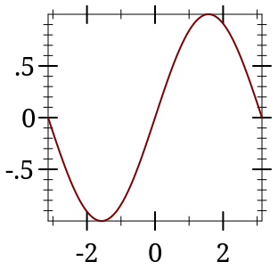
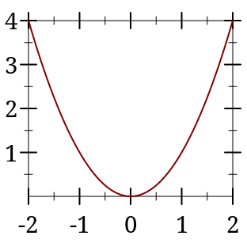
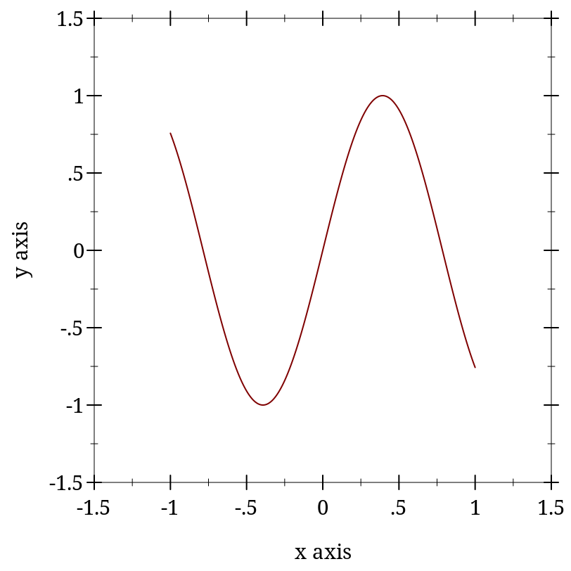

2 2D and 3D Plotting Procedures
The plotting procedures exported by plot/no-gui produce bitmap% and pict instances, and write to files. They do not require racket/gui, so they work in headless environments; for example, a Linux terminal with DISPLAY unset.
The plot module re-exports everything exported by plot/no-gui, as well as plot, plot3d, and other procedures that create interactive plots and plot frames. Interactive plotting procedures can always be imported, but fail when called if there is no working display or racket/gui is not present.
Each 3D plotting procedure behaves the same way as its corresponding 2D procedure, but takes the additional keyword arguments #:z-min, #:z-max, #:angle, #:altitude and #:z-label.
2.1 GUI Plotting Procedures
| (require plot) | package： plot-gui-lib |
函数
(plot renderer-tree [ #:x-min x-min #:x-max x-max #:y-min y-min #:y-max y-max #:width width #:height height #:title title #:x-label x-label #:y-label y-label #:legend-anchor legend-anchor #:out-file out-file #:out-kind out-kind]) → (or/c (is-a?/c snip%) void?) renderer-tree : (treeof (or/c renderer2d? nonrenderer?)) x-min : (or/c rational? #f) = #f x-max : (or/c rational? #f) = #f y-min : (or/c rational? #f) = #f y-max : (or/c rational? #f) = #f width : exact-positive-integer? = (plot-width) height : exact-positive-integer? = (plot-height) title : (or/c string? #f) = (plot-title) x-label : (or/c string? #f) = (plot-x-label) y-label : (or/c string? #f) = (plot-y-label) legend-anchor : anchor/c = (plot-legend-anchor) out-file : (or/c path-string? output-port? #f) = #f
out-kind : (one-of/c 'auto 'png 'jpeg 'xmb 'xpm 'bmp 'ps 'pdf 'svg) = 'auto
By default, plot produces a Racket value that is displayed as an image and can be manipulated like any other value. For example, they may be put in lists:
> (parameterize ([plot-width 150] [plot-height 150] [plot-x-label #f] [plot-y-label #f]) (list (plot (function sin (- pi) pi)) (plot (function sqr -2 2)))) '( )
When the parameter plot-new-window? is #t, plot opens a new window to display the plot and returns (void).
When #:out-file is given, plot writes the plot to a file using plot-file as well as returning a snip% or opening a new window.
When given, the x-min, x-max, y-min and y-max arguments determine the bounds of the plot, but not the bounds of the renderers. For example,
> (plot (function (λ (x) (sin (* 4 x))) -1 1) #:x-min -1.5 #:x-max 1.5 #:y-min -1.5 #:y-max 1.5) 
Here, the renderer draws in [-1,1] × [-1,1], but the plot area is [-1.5,1.5] × [-1.5,1.5].
Deprecated keywords. The #:fgcolor and #:bgcolor keyword arguments are currently supported for backward compatibility, but may not be in the future. Please set the plot-foreground and plot-background parameters instead of using these keyword arguments. The #:lncolor keyword argument is also accepted for backward compatibility but deprecated. It does nothing.
函数
(plot3d renderer-tree [ #:x-min x-min #:x-max x-max #:y-min y-min #:y-max y-max #:z-min z-min #:z-max z-max #:width width #:height height #:angle angle #:altitude altitude #:title title #:x-label x-label #:y-label y-label #:z-label z-label #:legend-anchor legend-anchor #:out-file out-file #:out-kind out-kind]) → (or/c (is-a?/c snip%) void?) renderer-tree : (treeof (or/c renderer3d? nonrenderer?)) x-min : (or/c rational? #f) = #f x-max : (or/c rational? #f) = #f y-min : (or/c rational? #f) = #f y-max : (or/c rational? #f) = #f z-min : (or/c rational? #f) = #f z-max : (or/c rational? #f) = #f width : exact-positive-integer? = (plot-width) height : exact-positive-integer? = (plot-height) angle : real? = (plot3d-angle) altitude : real? = (plot3d-altitude) title : (or/c string? #f) = (plot-title) x-label : (or/c string? #f) = (plot-x-label) y-label : (or/c string? #f) = (plot-y-label) z-label : (or/c string? #f) = (plot-z-label) legend-anchor : anchor/c = (plot-legend-anchor) out-file : (or/c path-string? output-port? #f) = #f
out-kind : (one-of/c 'auto 'png 'jpeg 'xmb 'xpm 'bmp 'ps 'pdf 'svg) = 'auto
When the parameter plot-new-window? is #t, plot3d opens a new window to display the plot and returns (void).
When #:out-file is given, plot3d writes the plot to a file using plot3d-file as well as returning a snip% or opening a new window.
When given, the x-min, x-max, y-min, y-max, z-min and z-max arguments determine the bounds of the plot, but not the bounds of the renderers.
Deprecated keywords. The #:fgcolor and #:bgcolor keyword arguments are currently supported for backward compatibility, but may not be in the future. Please set the plot-foreground and plot-background parameters instead of using these keyword arguments. The #:lncolor keyword argument is also accepted for backward compatibility but deprecated. It does nothing.
The #:az and #:alt keyword arguments are backward-compatible, deprecated aliases for #:angle and #:altitude, respectively.
函数
(plot-snip <plot-argument> ...) → (is-a?/c 2d-plot-snip%)
<plot-argument> : <plot-argument-contract>
函数
(plot3d-snip <plot-argument> ...) → (is-a?/c snip%)
<plot-argument> : <plot-argument-contract>
函数
(plot-frame <plot-argument> ...) → (is-a?/c frame%)
<plot-argument> : <plot-argument-contract>
函数
(plot3d-frame <plot-argument> ...) → (is-a?/c frame%)
<plot-argument> : <plot-argument-contract>
Use plot-frame and plot3d-frame to create a frame% regardless of the value of plot-new-window?. The frame is initially hidden.
Use plot-snip and plot3d-snip to create an interactive snip% regardless of the value of plot-new-window?.
The snip% objects returned by plot-snip can be used to construct interactive plots. See Interactive Overlays for 2D plots for more details.
2.2 Non-GUI Plotting Procedures
| (require plot/no-gui) | package： plot-lib |
函数
(plot-file renderer-tree output [ kind] #:<plot-keyword> <plot-keyword> ...) → void? renderer-tree : (treeof (or/c renderer2d? nonrenderer?)) output : (or/c path-string? output-port?)
kind : (one-of/c 'auto 'png 'jpeg 'xmb 'xpm 'bmp 'ps 'pdf 'svg) = 'auto <plot-keyword> : <plot-keyword-contract>
函数
(plot3d-file renderer-tree output [ kind] #:<plot3d-keyword> <plot3d-keyword> ...) → void? renderer-tree : (treeof (or/c renderer3d? nonrenderer?)) output : (or/c path-string? output-port?)
kind : (one-of/c 'auto 'png 'jpeg 'xmb 'xpm 'bmp 'ps 'pdf 'svg) = 'auto <plot3d-keyword> : <plot3d-keyword-contract>
函数
(plot3d-pict <plot3d-argument> ...) → pict?
<plot3d-argument> : <plot3d-argument-contract>
函数
(plot-bitmap <plot-argument> ...) → (is-a?/c bitmap%)
<plot-argument> : <plot-argument-contract>
函数
(plot3d-bitmap <plot3d-argument> ...) → (is-a?/c bitmap%)
<plot3d-argument> : <plot3d-argument-contract>
Use plot-file or plot3d-file to save a plot to a file. When creating a JPEG file, the parameter plot-jpeg-quality determines its quality. When creating a PostScript or PDF file, the parameter plot-ps/pdf-interactive? determines whether the user is given a dialog to set printing parameters. (See post-script-dc% and pdf-dc%.) When kind is 'auto, plot-file and plot3d-file try to determine from the file name extension the kind of file to write.
#lang slideshow (require plot) (plot-font-size (current-font-size)) (plot-width (current-para-width)) (plot-height 600) (plot-background-alpha 1/2) (slide #:title "A 2D Parabola" (plot-pict (function sqr -1 1 #:label "y = x^2")))
Use plot-bitmap or plot3d-bitmap to create a bitmap%.
函数
(plot/dc renderer-tree dc x y width height #:<plot-keyword> <plot-keyword> ...) → void? renderer-tree : (treeof (or/c renderer2d? nonrenderer?)) dc : (is-a?/c dc<%>) x : real? y : real? width : (>=/c 0) height : (>=/c 0) <plot-keyword> : <plot-keyword-contract>
函数
(plot3d/dc renderer-tree dc x y width height #:<plot3d-keyword> <plot3d-keyword> ...) → void? renderer-tree : (treeof (or/c renderer3d? nonrenderer?)) dc : (is-a?/c dc<%>) x : real? y : real? width : (>=/c 0) height : (>=/c 0) <plot3d-keyword> : <plot3d-keyword-contract>
Use these if you need to continually update a plot on a canvas%, or to create other plot-like functions with different backends.
2.3 Pict-Plotting Work-a-Likes
| (require plot/pict) | package： plot-lib |
When setting up an evaluator for a Scribble manual, require plot/pict instead of plot. Evaluation will produce picts instead of snips, which scale nicely in PDF-rendered documentation.
(define plot-eval (let ([eval (make-base-eval)]) (eval '(begin (require racket/math racket/match racket/list racket/draw racket/class plot/pict plot/utils))) eval))
If you use (require (for-label plot)), links in example code should resolve to documentation for the functions exported by plot.
2.4 Bitmap-Plotting Work-a-Likes
| (require plot/bitmap) | package： plot-lib |
When plotting in an environment where bitmap% instances can be shown but snip% instances cannot (for example, on a web page that evaluates Racket code), require plot/bitmap instead of plot.